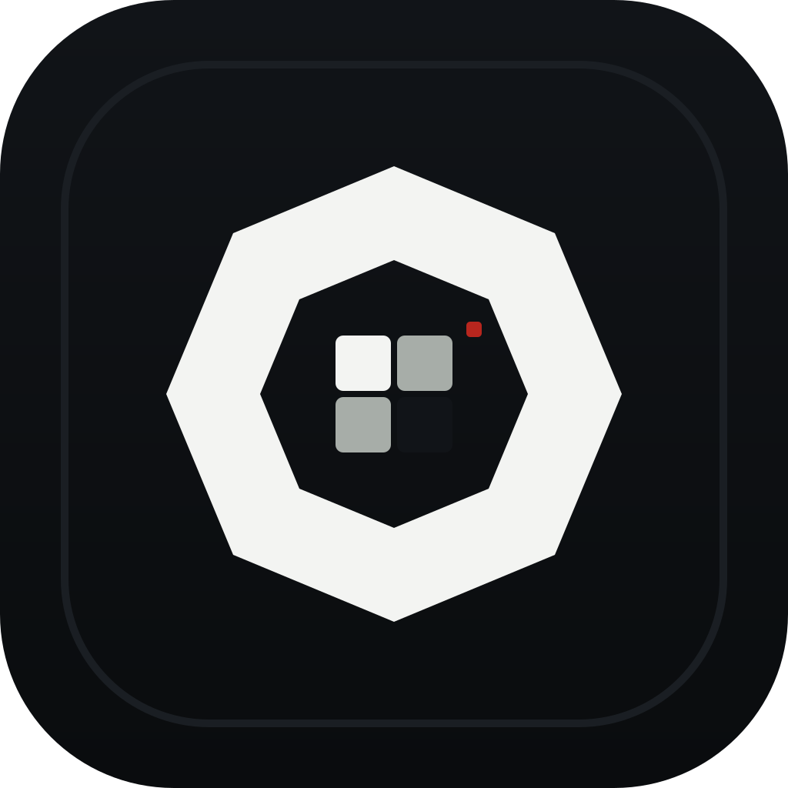

No third-party trackers
PureShot does not add analytics SDKs, ad tracking, cookies, or third-party telemetry to the launch app.
PureShot
PureShot is a fully free professional camera app for iPhone 15 and newer, built around RAW-first stills, manual controls, clean video paths, and local-only media handling.

P.0Support URL
Use this page as the support and privacy reference for the free PureShot launch. It documents the implemented device, permission, privacy, and manual-control contract for App Review and early users.
The App Store download link will be added here after the free build is approved and live.
Privacy
PureShot does not add analytics SDKs, ad tracking, cookies, or third-party telemetry to the launch app.
Capture metadata and saved media remain on the device unless the user explicitly exports through iOS system flows.
Camera access opens the viewfinder. Microphone access is requested only when the user enters video capture.
Supported Devices
Manual Controls
Use manual exposure controls to hold ISO and shutter behavior when the camera hardware exposes those controls.
Manual focus is hardware-gated and available when the active iPhone camera supports locked custom lens positioning.
For natural motion, start near a shutter speed close to double the frame rate, then adjust intentionally for the scene.
Media Kit